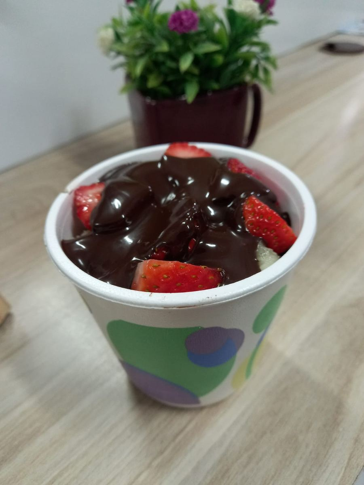
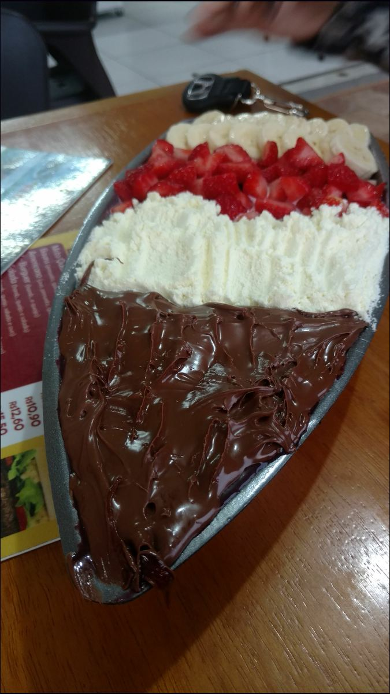
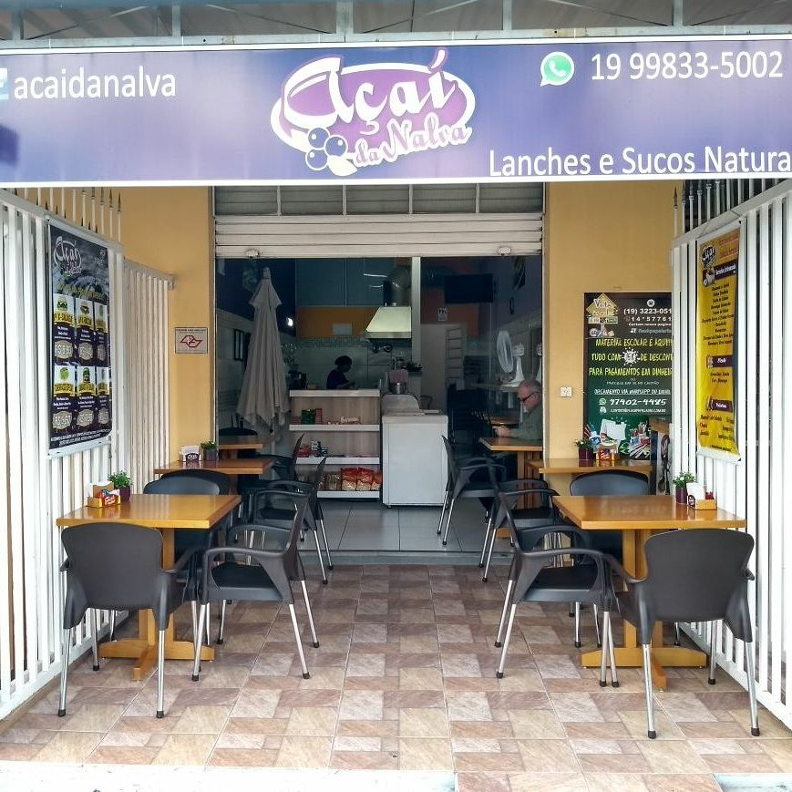

Complementos sem custo adicional
Monte do seu jeito. Paga só o copo.
Açaí com as frutas e complementos que você quiser, sem pagar a mais por isso. Tem copo, barca e a famosa opção de mangaba. E ainda lanches caprichados e sucos naturais.
Quinta a domingo, a partir das 15h


Monte o seu
Escolha à vontade
Monte aqui, mande pelo WhatsApp e passe para retirar. A Nalva confirma o pedido.
1. Tamanho
2. Complementos (quantos quiser)
Não é só açaí
Lanches e sucos naturais
Lanches
"Muito caprichados", nas palavras de quem sempre pede para viagem.
Sucos naturais
Feitos na hora, um dos pontos mais elogiados da casa.
Mangaba
"Espetacular", segundo os clientes. Difícil de achar em Campinas.
4,8 · 207 avaliações no Google
A família toda pede
Um dos melhores açaís da região, tem uma opção chamada mangaba que é espetacular!Resumo das avaliações · Google
Os lanches são muito caprichados e o açaí minha neta ama. Preparado do jeito que você escolher.Rita · Google
Melhor açaí da região! Minha família só consome de lá: produtos de qualidade e entrega rápida.Anna Clara · Google

Onde fica
Retire na loja
| Segunda a quarta | Fechado |
| Quinta | 15h às 21h |
| Sexta | 15h às 22h |
| Sábado | 15h às 22h |
| Domingo | 15h às 21h |
Rua Celeste, 179 · Jardim Morumbi, Campinas (SP) · perto da Fac 4
WhatsApp (19) 99833-5002 · @acaidanalva